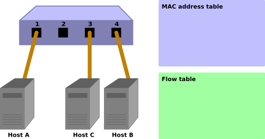
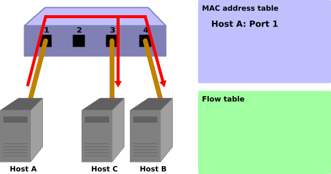
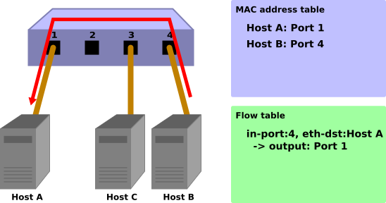
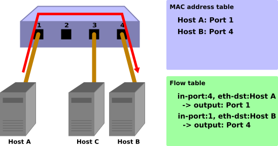

스위칭 허브¶
이 장에서는 간단한 스위칭 허브 구현을 주제로 Ryu를 사용한 응용 프로그램을 구현하는 방법을 설명하고 있습니다.
스위칭 허브¶
스위칭 허브는 다양한 기능들을 갖고 있습니다만, 여기에서는 다음과 같은 간단한 기능을 가진 스위칭 허브의 구현을 살펴 보고자 합니다.
- 포트에 연결되어 있는 호스트의 MAC 주소를 학습하고 MAC 주소 테이블을 유지하기
- 이미 학습된 호스트에 대한 패킷을 수신하면 호스트에 연결된 포트로 전송
- 알 수 없는 호스트에 대한 패킷을 수신하면, 플러딩(Flooding)
이러한 스위치를 Ryu를 사용하여 구현해 봅시다.
OpenFlow 의한 스위칭 허브¶
OpenFlow 스위치는 Ryu와 같은 OpenFlow 컨트롤러의 지시를 받고, 다음과 같은 것들을 수행할 수 있습니다.
- 수신된 패킷의 주소를 재작성(rewrite)하거나 지정된 포트쪽으로부터 전송
- 받은 패킷을 컨트롤러에 전송 (Packet-In)
- 컨트롤러에 의해 전달된 (forwarded) 패킷을 특정 포트쪽으로부터 전송 (Packet-Out)
이러한 기능들을 결합하여 스위칭 허브를 만들 수 있습니다.
우선, Packet-In 기능을 이용하여 MAC 주소를 학습할 필요가 있습니다. 컨트롤러는 Packet-In 기능을 이용하여 스위치로부터 패킷을 받을 수가 있습니다. 스위치는 받은 패킷을 분석하고 연결되어 있는 포트에 대한 호스트의 MAC 주소 및 정보를 학습할 수 있습니다.
학습 후에는 받은 패킷을 전송합니다. 스위치는 패킷의 목적지 MAC 주소가 학습된 호스트에 속해있는지 아닌지를 찾아봅니다. 검색 결과 여부에 따라 스위치는 다음과 같은 작업을 수행합니다.
- 학습된 호스트인 경우 ... Packet-Out 기능으로 연결된 포트쪽으로 패킷을 전송
- 알 수 없는 호스트인 경우 ... Packet-Out 기능으로 패킷을 플러딩
이러한 동작을 그림과 함께 단계별로 설명합니다.
초기 상태
플로우 테이블이 비어있는 초기 상태입니다.
포트 1에 호스트 A, 포트 4에 호스트 B, 포트 3에 호스트 C가 연결되어 있다고 가정합니다.
호스트 A → 호스트 B
호스트 A에서 호스트 B로 패킷이 전송되면 Packet-In 메시지가 전송되고 호스트 A의 MAC 주소가 포트 1에 학습됩니다. 호스트 B의 포트는 아직 알지 못하기 때문에 패킷은 플러딩되고 따라서 해당 패킷은 호스트 B와 호스트 C에서 수신됩니다.
Packet-In:
in-port: 1 eth-dst: 호스트B eth-src: 호스트A
Packet-Out:
action: OUTPUT:Flooding
호스트B→호스트A
호스트 B에서 호스트 A로 패킷이 리턴되면 플로우 테이블에 항목을 추가하고 또한 패킷은 포트 1에 전송됩니다. 따라서 호스트 C는 이 패킷을 수신하지 않습니다.
Packet-In:
in-port: 4 eth-dst: 호스트A eth-src: 호스트B
Packet-Out:
action: OUTPUT:포트1
호스트A→호스트B
또한, 호스트 A에서 호스트 B로 패킷이 전송되면 플로우 테이블에 항목을 추가하고 또한 패킷은 포트 4에 전송됩니다.
Packet-In:
in-port: 1 eth-dst: 호스트B eth-src: 호스트A
Packet-Out:
action: OUTPUT:호스트4
이제, Ryu를 사용하여 구현된 스위칭 허브 소스 코드를 살펴 보겠습니다.
Ryu를 사용한 스위칭 허브 구현¶
스위칭 허브에 대한 소스 코드는 Ryu 소스 트리에 있습니다.
ryu/app/simple_switch_13.py
OpenFlow 버전에 따라 그 밖에도 simple_switch.py (OpenFlow 1.0), simple_switch_12.py (OpenFlow 1.2)이 있지만, 여기에서는 OpenFlow 1.3을 지원하는 구현을 살펴 보겠습니다.
짧은 소스 코드이므로, 전체를 여기에 게재합니다.
from ryu.base import app_manager
from ryu.controller import ofp_event
from ryu.controller.handler import CONFIG_DISPATCHER, MAIN_DISPATCHER
from ryu.controller.handler import set_ev_cls
from ryu.ofproto import ofproto_v1_3
from ryu.lib.packet import packet
from ryu.lib.packet import ethernet
class SimpleSwitch13(app_manager.RyuApp):
OFP_VERSIONS = [ofproto_v1_3.OFP_VERSION]
def __init__(self, *args, **kwargs):
super(SimpleSwitch13, self).__init__(*args, **kwargs)
self.mac_to_port = {}
@set_ev_cls(ofp_event.EventOFPSwitchFeatures, CONFIG_DISPATCHER)
def switch_features_handler(self, ev):
datapath = ev.msg.datapath
ofproto = datapath.ofproto
parser = datapath.ofproto_parser
# install table-miss flow entry
#
# We specify NO BUFFER to max_len of the output action due to
# OVS bug. At this moment, if we specify a lesser number, e.g.,
# 128, OVS will send Packet-In with invalid buffer_id and
# truncated packet data. In that case, we cannot output packets
# correctly.
match = parser.OFPMatch()
actions = [parser.OFPActionOutput(ofproto.OFPP_CONTROLLER,
ofproto.OFPCML_NO_BUFFER)]
self.add_flow(datapath, 0, match, actions)
def add_flow(self, datapath, priority, match, actions):
ofproto = datapath.ofproto
parser = datapath.ofproto_parser
inst = [parser.OFPInstructionActions(ofproto.OFPIT_APPLY_ACTIONS,
actions)]
mod = parser.OFPFlowMod(datapath=datapath, priority=priority,
match=match, instructions=inst)
datapath.send_msg(mod)
@set_ev_cls(ofp_event.EventOFPPacketIn, MAIN_DISPATCHER)
def _packet_in_handler(self, ev):
msg = ev.msg
datapath = msg.datapath
ofproto = datapath.ofproto
parser = datapath.ofproto_parser
in_port = msg.match['in_port']
pkt = packet.Packet(msg.data)
eth = pkt.get_protocols(ethernet.ethernet)[0]
dst = eth.dst
src = eth.src
dpid = datapath.id
self.mac_to_port.setdefault(dpid, {})
self.logger.info("packet in %s %s %s %s", dpid, src, dst, in_port)
# learn a mac address to avoid FLOOD next time.
self.mac_to_port[dpid][src] = in_port
if dst in self.mac_to_port[dpid]:
out_port = self.mac_to_port[dpid][dst]
else:
out_port = ofproto.OFPP_FLOOD
actions = [parser.OFPActionOutput(out_port)]
# install a flow to avoid packet_in next time
if out_port != ofproto.OFPP_FLOOD:
match = parser.OFPMatch(in_port=in_port, eth_dst=dst)
self.add_flow(datapath, 1, match, actions)
data = None
if msg.buffer_id == ofproto.OFP_NO_BUFFER:
data = msg.data
out = parser.OFPPacketOut(datapath=datapath, buffer_id=msg.buffer_id,
in_port=in_port, actions=actions, data=data)
datapath.send_msg(out)
그러면, 각각의 구현 내용을 살펴 보겠습니다.
클래스의 정의 및 초기화¶
Ryu 응용 프로그램으로 구현하기 위해 ryu.base.app_manager.RyuApp을
상속합니다. 또한 OpenFlow 1.3을 사용하기 때문에 OFP_VERSIONS
에 OpenFlow 1.3 버전을 지정합니다.
또한 MAC 주소 테이블에 해당하는 mac_to_port를 정의합니다.
OpenFlow 프로토콜은 OpenFlow 스위치와 컨트롤러가 통신을 위해 필요한 핸드 셰이크 등의 몇 가지 단계가 정의되어 있습니다. 그러나, Ryu의 프레임워크가 이러한 단계들을 다루기에, Ryu 응용 프로그램에서는 이러한 것들을 신경쓰지 않아도 됩니다.
class SimpleSwitch13(app_manager.RyuApp):
OFP_VERSIONS = [ofproto_v1_3.OFP_VERSION]
def __init__(self, *args, **kwargs):
super(SimpleSwitch13, self).__init__(*args, **kwargs)
self.mac_to_port = {}
# ...
이벤트 처리기¶
Ryu에서, OpenFlow 메시지를 수신하면 해당 메시지에 대응하는 이벤트가 생성 됩니다. Ryu 응용 프로그램은 수신하고자 하는 메시지에 대응하는 이벤트 처리기를 구현합니다.
이벤트 처리기는 인수 처리를 위해 이벤트 객체를 갖는 함수를 정의하고
한정(decorate)을 위해 ryu.controller.handler.set_ev_cls 한정자를 사용합니다.
set_ev_cls는 수신하는 메시지를 지원하는 이벤트 클래스와 인수에 대한 OpenFlow 스위치의 상태를 지정합니다.
이벤트 클래스 이름은 ryu.controller.ofp_event.EventOFP + <OpenFlow
메시지 이름> 입니다. 예를 들어, Packet-In 메시지의 경우
EventOFPPacketIn 입니다.
자세한 내용은 Ryu 문서 API 레퍼런스 를 참조하십시오.
상태에 대해서는 다음 중 하나 또는 리스트로 지정합니다.
| 정의 | 설명 |
|---|---|
| ryu.controller.handler.HANDSHAKE_DISPATCHER | HELLO 메시지 교환 |
| ryu.controller.handler.CONFIG_DISPATCHER | SwitchFeatures 메시지의 수신 |
| ryu.controller.handler.MAIN_DISPATCHER | 표준 상태 |
| ryu.controller.handler.DEAD_DISPATCHER | 연결 절단 |
Table-miss 플로우 항목 추가¶
OpenFlow 스위치와의 핸드 셰이크가 완료된 후, Table-miss 플로우 항목(entry)이 플로우 테이블에 추가되고 Packet-In 메시지를 수신할 준비를 합니다.
구체적으로는 Switch Features (Features Reply) 메시지를 수신하자마자 Table-miss 플로우 항목을 추가합니다.
@set_ev_cls(ofp_event.EventOFPSwitchFeatures, CONFIG_DISPATCHER)
def switch_features_handler(self, ev):
datapath = ev.msg.datapath
ofproto = datapath.ofproto
parser = datapath.ofproto_parser
# ...
ev.msg 에는 이벤트에 해당하는 OpenFlow 메시지 클래스의 인스턴스가
저장되어 있습니다. 이 경우에는
ryu.ofproto.ofproto_v1_3_parser.OFPSwitchFeatures 입니다.
msg.datapath 에는 이 메시지를 발행한 OpenFlow 스위치에 해당하는
ryu.controller.controller.Datapath 클래스의 인스턴스가 저장되어 있습니다.
Datapath 클래스는 OpenFlow 스위치와의 실제 통신 처리 및 수신 메시지에 대응하는 이벤트 발행 등의 중요한 작업을 수행하고 있습니다.
Ryu 응용 프로그램에서 사용되는 주요 특성은 다음과 같습니다.
| 속성이름 | 설명 |
|---|---|
| id | 연결된 OpenFlow 스위치 ID (데이터 경로 ID)입니다. |
| ofproto | 사용하는 OpenFlow 버전에 대응하는 ofproto 모듈을 보여줍니다. OpenFlow 1.3은 다음과 같습니다.
|
| ofproto_parser | ofproto와 마찬가지로 ofproto_parser 모듈을 보여줍니다. OpenFlow 1.3은 다음과 같습니다.
|
Ryu 응용 프로그램에서 사용하는 Datapath 클래스의 주요 메서드는 다음과 같습니다.
send_msg(msg)
OpenFlow 메시지를 보냅니다. msg는 보내는 OpenFlow 메시지에 대응하는ryu.ofproto.ofproto_parser.MsgBase의 서브 클래스입니다.
스위칭 허브는 받은 Switch Features 메시지 자체는 특별히 사용하지 않습니다. Table-miss 플로우 항목을 추가하는 타이밍을 위한 이벤트로 다루고 있습니다.
def switch_features_handler(self, ev):
# ...
# install table-miss flow entry
#
# We specify NO BUFFER to max_len of the output action due to
# OVS bug. At this moment, if we specify a lesser number, e.g.,
# 128, OVS will send Packet-In with invalid buffer_id and
# truncated packet data. In that case, we cannot output packets
# correctly.
match = parser.OFPMatch()
actions = [parser.OFPActionOutput(ofproto.OFPP_CONTROLLER,
ofproto.OFPCML_NO_BUFFER)]
self.add_flow(datapath, 0, match, actions)
Table-miss 플로우 항목은 우선 순위가 최저(0)이고, 모든 패킷에 매치되는 항목입니다. 이 항목의 명령(instruction)에는 컨트롤러 포트로의 출력을 출력 액션으로 지정하여, 들어오는 패킷이 모든 정상(normal) 플로우 항목과 일치하지 않으면, Packet-In을 생성할 수 있습니다.
주석
2014 년 1 월 현재 Open vSwitch는 OpenFlow 1.3의 지원이 불완전이며, OpenFlow 1.3 이전과 마찬가지로 기본적으로 Packet-In이 생성됩니다. 또한 Table-miss 플로우 항목이 현재는 지원되지 않고 정상(normal) 플로우 항목으로 취급됩니다.
모든 패킷에 매치시키기 위해 빈 Match을 생성합니다. Match는
OFPMatch 클래스로 표현됩니다.
그 다음, 컨트롤러 포트로 전송하는 OUTPUT 액션 클래스 (
OFPActionOutput)의 인스턴스를 생성합니다.
컨트롤러가 output 대상으로 지정되고 max_len에는
OFPCML_NO_BUFFER 을 지정하여 모든 패킷들이 컨트롤러로 전송되도록 합니다.
주석
컨트롤러는 패킷의 시작 부분(Ethernet 헤더 분)만을 전송 하고 나머지는 스위치 버퍼에 두는 것이 효율성 측면에서 바람직 하지만 Open vSwitch 버그를 해결하기 위해 여기에 전체 패킷을 전송합니다. 이 버그는 Open vSwitch 2.1.0에서 수정되었습니다.
마지막으로, 우선 순위 0(가장 낮음)을 지정하여 add_flow() 메서드를 실행하여 Flow Mod
메시지를 보냅니다. add_flow() 메서드의 내용에 대해서는 뒤에서 설명하고자 합니다.
Packet-in 메시지¶
알 수 없는 목적지를 가진 수신 패킷을 허용하기 위해 Packet-In 이벤트 처리기를 만듭니다.
@set_ev_cls(ofp_event.EventOFPPacketIn, MAIN_DISPATCHER)
def _packet_in_handler(self, ev):
msg = ev.msg
datapath = msg.datapath
ofproto = datapath.ofproto
parser = datapath.ofproto_parser
# ...
자주 사용되는 OFPPacketIn 클래스의 속성은 다음과 같은 것들이 있습니다.
| 속성이름 | 설명 |
|---|---|
| match | ryu.ofproto.ofproto_v1_3_parser.OFPMatch 클래스의 인스턴스
에서 들어오는 패킷의 메타 정보가 설정되어 있습니다. |
| data | 수신 패킷 자체를 나타내는 이진 데이터입니다. |
| total_len | 수신 패킷의 데이터 길이입니다. |
| buffer_id | 수신 패킷이 OpenFlow 스위치에서 버퍼처리 되는 경우
해당 ID가 표시됩니다. 버퍼처리 되지 않는 경우
ryu.ofproto.ofproto_v1_3.OFP_NO_BUFFER 가 설정됩니다. |
MAC 주소 테이블 업데이트¶
def _packet_in_handler(self, ev):
# ...
in_port = msg.match['in_port']
pkt = packet.Packet(msg.data)
eth = pkt.get_protocols(ethernet.ethernet)[0]
dst = eth.dst
src = eth.src
dpid = datapath.id
self.mac_to_port.setdefault(dpid, {})
self.logger.info("packet in %s %s %s %s", dpid, src, dst, in_port)
# learn a mac address to avoid FLOOD next time.
self.mac_to_port[dpid][src] = in_port
# ...
OFPPacketIn 클래스의 match에서 수신 포트(in_port)를 가져옵니다.
대상 MAC 주소와 원본 MAC 주소는 Ryu 패킷 라이브러리를 사용하여
수신 패킷의 Ethernet 헤더에서 얻어집니다.
가져온 원본 MAC 주소와 수신 포트 번호를 기반으로 MAC 주소 테이블을 업데이트합니다.
여러 OpenFlow 스위치와의 연결에 대응하기 위해 MAC 주소 테이블은 OpenFlow 스위치마다 관리하도록 되어 있습니다. OpenFlow 스위치를 식별하는 데이터 경로 ID 를 이용하고 있습니다.
대상 포트 판정¶
대상 MAC 주소가 MAC 주소 테이블에 존재하는 경우 대응되는 포트 번호가
사용됩니다. 발견되지 않으면 플러딩(OFPP_FLOOD)를 출력 포트에 지정하는
OUTPUT 액션 클래스의 인스턴스를 생성합니다.
def _packet_in_handler(self, ev):
# ...
if dst in self.mac_to_port[dpid]:
out_port = self.mac_to_port[dpid][dst]
else:
out_port = ofproto.OFPP_FLOOD
actions = [parser.OFPActionOutput(out_port)]
# install a flow to avoid packet_in next time
if out_port != ofproto.OFPP_FLOOD:
match = parser.OFPMatch(in_port=in_port, eth_dst=dst)
self.add_flow(datapath, 1, match, actions)
# ...
대상 MAC 주소가 있으면, OpenFlow 스위치의 플로우 테이블에 항목을 추가합니다.
Table-miss 플로우 항목의 추가와 마찬가지로 매치와 액션을 지정하고 add_flow()를 실행하여 플로우 항목을 추가합니다.
Table-miss 플로우 항목과 달리, 이번에는 매치 조건을 설정합니다. 이번 스위칭 허브의 구현에서는 수신 포트 (in_port)와 대상 MAC 주소 (eth_dst)를 지정합니다. 예를 들어, 「포트 1에서 수신하고 호스트 B로 향하는」 패킷이 대상이 됩니다.
이번 플로우 항목은 우선 순위에 1을 지정합니다. 값이 클 수록 우선 순위가 높아지므로 여기에 추가하는 플로우 항목은 Table-miss 플로우 항목보다 먼저 평가됩니다.
위의 작업을 포함하여 정리하면 다음과 유사한 항목을 플로우 테이블 에 추가합니다.
포트 1에서 수신한 호스트 B로 전달되는 (대상 MAC 주소가 B) 패킷을 포트 4에 전송하기
힌트
OpenFlow에서 NORMAL 포트는 논리적인 출력 포트가 옵션으로 규정하고 출력 포트에 NORMAL을 지정하면 스위치의 L2/L3 기능을 사용하라고 패킷을 처리할 수 있습니다. 즉, 모든 패킷을 NORMAL 포트에 출력하도록 지시하는 것만으로, 스위칭 허브 역할을 하는 것처럼 할 수 있지만, 여기에서는 각각의 처리를 OpenFlow를 사용하여 수행하는 것으로 합니다.
플로우 항목의 추가 처리¶
Packet-In 처리기에서의 처리가 아직 끝나지 않지만 여기서 일단 플로우 항목을 추가하는 메서드 쪽을 살펴 보겠습니다.
def add_flow(self, datapath, priority, match, actions):
ofproto = datapath.ofproto
parser = datapath.ofproto_parser
inst = [parser.OFPInstructionActions(ofproto.OFPIT_APPLY_ACTIONS,
actions)]
# ...
플로우 항목에는 대상 패킷의 조건을 나타내는 매치와 패킷에 대한 작업을 나타내는 인스트럭션, 우선 순위, 유효 시간 등을 설정합니다.
스위칭 허브의 구현은 인스트럭션에 Apply Actions를 사용하여 지정된 액션을 즉시 적용하도록 설정합니다.
마지막으로, Flow Mod 메시지를 발행하여 플로우 테이블에 항목을 추가합니다.
def add_flow(self, datapath, port, dst, actions):
# ...
mod = parser.OFPFlowMod(datapath=datapath, priority=priority,
match=match, instructions=inst)
datapath.send_msg(mod)
Flow Mod 메시지에 대응하는 클래스는 OFPFlowMod 클래스입니다. OFPFlowMod
클래스의 인스턴스를 생성하여 Datapath.send_msg() 메서드를 사용해 OpenFlow
스위치에 메시지를 보냅니다.
OFPFlowMod 클래스의 생성자에는 많은 인수가 있습니다만, 일반적으로 대부분의 경우 기본값을 그대로 하면됩니다. 괄호 안은 기본값입니다.
datapath
플로우 테이블을 조작하는 대상 OpenFlow 스위치에 해당하는 Datapath 클래스의 인스턴스입니다. 일반적으로 Packet-In 메시지 등의 처리기 에 전달되는 이벤트에서 가져온 것입니다.
cookie (0)
컨트롤러에 지정하는 선택적 값으로 항목을 업데이트 또는 삭제할 때 필터 조건으로 사용할 수 있습니다. 패킷 처리에는 사용되지 않습니다.
cookie_mask (0)
항목의 업데이트 또는 삭제하는 경우 0이 아닌 값을 지정하면 항목의 cookie 값을 사용하는 동작 대상 항목의 필터로 사용됩니다.
table_id (0)
동작 대상의 플로우 테이블의 테이블 ID를 지정합니다.
command (ofproto_v1_3.OFPFC_ADD)
어떤 작업을 할 것인지를 지정합니다.
값 설명 OFPFC_ADD 새로운 플로우 항목을 추가합니다 OFPFC_MODIFY 플로우 항목을 업데이트합니다 OFPFC_MODIFY_STRICT 엄격하게 일치하는 플로우 항목을 업데이트합니다 OFPFC_DELETE 플로우 항목을 삭제합니다 OFPFC_DELETE_STRICT 엄격하게 일치하는 플로우 항목을 삭제합니다
idle_timeout (0)
해당 항목의 유효 기간을 초 단위로 지정합니다. 항목이 참조되지 않고 idle_timeout에서 지정된 시간을 초과하면 항목이 제거됩니다. 항목이 참조 될 때 경과 시간은 리셋됩니다.
항목이 삭제되면 Flow Removed 메시지가 컨트롤러에 알려 있습니다.
hard_timeout (0)
해당 항목의 유효 기간을 초 단위로 지정합니다. idle_timeout과 달리, hard_timeout은 항목이 참조되더라도 경과 시간은 리셋되지 않습니다. 즉, 항목의 참조 여부에 관계없이 지정된 시간이 경과하면 항목이 삭제됩니다.
idle_timeout과 마찬가지로 항목이 삭제되면 Flow Removed 메시지가 보내집니다.
priority (0)
해당 항목의 우선 순위를 지정합니다. 값이 클수록 우선 순위가 높습니다.
buffer_id (ofproto_v1_3.OFP_NO_BUFFER)
OpenFlow 스위치에서 버퍼된 패킷의 버퍼 ID를 지정합니다. 버퍼 ID는 Packet-In 메시지로 통지되고, 지정하면 OFPP_TABLE을 출력 포트에 지정된 Packet-Out 메시지와 Flow Mod 메시지 두 메시지를 보낸 것처럼 처리됩니다. command가 OFPFC_DELETE 또는 OFPFC_DELETE_STRICT의 경우는 무시됩니다.
버퍼 ID를 지정하지 않으면,
OFP_NO_BUFFER을 설정합니다.
out_port (0)
OFPFC_DELETE 또는 OFPFC_DELETE_STRICT의 경우 대상 항목을 출력 포트 필터링합니다. OFPFC_ADD, OFPFC_MODIFY, OFPFC_MODIFY_STRICT 의 경우는 무시됩니다.
출력 포트의 필터를 해제하려면
OFPP_ANY을 지정합니다.
out_group (0)
out_port와 마찬가지로 출력 그룹에서 필터링합니다.
해제하려면
OFPG_ANY을 지정합니다.
flags (0)
다음 플래그의 조합을 지정할 수 있습니다.
값 설명 OFPFF_SEND_FLOW_REM FLOW_REM이 항목이 삭제될 때 컨트롤러에 Flow Removed 메시지를 발행합니다. OFPFF_CHECK_OVERLAP OFPFC_ADD의 경우 중복 항목의 검사를 수행 합니다. 중복된 항목이 있는 경우에는 Flow Mod가 손실 되고 오류가 반환됩니다. OFPFF_RESET_COUNTS 해당 항목의 패킷과 바이트 카운터를 재설정합니다. OFPFF_NO_PKT_COUNTS 이 항목의 패킷 카운터를 해제합니다. OFPFF_NO_BYT_COUNTS 이 항목에 대한 바이트 카운터를 해제합니다.
match (None)
Match를 지정합니다.
instructions ([])
명령어의 목록을 지정합니다.
패킷 전송¶
Packet-In 처리기로 돌아가 마지막 처리 단계를 설명합니다.
대상 MAC 주소를 MAC 주소 테이블에서 발견하는 여부와 관계없이 최종 적으로 Packet-Out 메시지를 생성하여 수신 패킷을 전송합니다.
def _packet_in_handler(self, ev):
# ...
data = None
if msg.buffer_id == ofproto.OFP_NO_BUFFER:
data = msg.data
out = parser.OFPPacketOut(datapath=datapath, buffer_id=msg.buffer_id,
in_port=in_port, actions=actions, data=data)
datapath.send_msg(out)
Packet-Out 메시지에 대응하는 클래스는 OFPPacketOut 클래스입니다.
OFPPacketOut 생성자의 인수는 다음과 같이되어 있습니다.
datapath
OpenFlow 스위치에 해당하는 Datapath 클래스의 인스턴스를 지정합니다.
buffer_id
OpenFlow 스위치에서 버퍼 된 패킷 버퍼 ID를 지정합니다. 버퍼를 사용하지 않으면,OFP_NO_BUFFER을 지정합니다.
in_port
패킷을 수신 한 포트를 지정합니다. 수신 패킷이 아닌 경우OFPP_CONTROLLER를 지정합니다.
actions
작업 목록을 지정합니다.
data
패킷의 이진 데이터를 지정합니다. buffer_id에OFP_NO_BUFFER가 지정된 경우에 사용됩니다. OpenFlow 스위치 버퍼를 사용하는 경 우 생략합니다.
스위칭 허브의 구현은 buffer_id에 Packet-In 메시지 buffer_id를 지정합니다. Packet-In 메시지 내 buffer_id가 무효 인 경우, 들어오는 Packet-In 패킷을 data로 지정하여 패킷을 전송합니다.
이제 스위칭 허브 소스 코드의 설명이 끝났습니다. 다음으로 스위칭 허브를 실행하여 실제 동작을 확인합니다.
Ryu 응용 프로그램 실행¶
스위칭 허브의 실행을 위해 OpenFlow 스위치는 Open vSwitch 실행 환경으로 mininet을 사용합니다.
Ryu의 OpenFlow Tutorial VM 이미지가 포함되어 있으므로,이 VM 이미지 를 이용하면 실험 환경을 쉽게 준비할 수 있습니다.
VM 이미지
http://sourceforge.net/projects/ryu/files/vmimages/OpenFlowTutorial/
OpenFlow_Tutorial_Ryu3.2.ova (약1.4GB)
관련 문서 (Wiki 페이지)
문서에 있는 VM 이미지는 Open vSwitch와 Ryu의 버전이 오래 되었기 때문에 주의하시기 바랍니다.
이 VM 이미지를 사용하지 않고, 스스로 환경을 구축하는 것 또한 당연히 가능합니다. VM 이미지에 포함된 각 소프트웨어 버전은 최신판 사용을 가정합니다. 직접 구축하는 경우 아래 사이트를 참고합니다.
- Mininet VM
-
- 설치 단계 (github 페이지)
- https://github.com/mininet/mininet/blob/master/INSTALL
- Open vSwitch
http://openvswitch.org/download/
- 설치 단계 (github 페이지)
- https://github.com/openvswitch/ovs/blob/master/INSTALL.md
- Ryu
-
설치 단계
$ sudo apt-get install git python-dev python-setuptools python-pip $ git clone https://github.com/osrg/ryu.git $ cd ryu $ sudo pip install .
여기에서는 Ryu 용 OpenFlow Tutorial의 VM 이미지를 사용합니다.
Mininet 실행¶
mininet에서 xterm을 시작하기 위해 X를 사용할 수 있는 환경이 필요합니다.
여기에서는 OpenFlow Tutorial VM을 사용하므로, ssh에서 X11 Forwarding을 사용하여 로그인하십시오.
$ ssh -X ryu@<VM 주소>
사용자 이름은 ryu 이고, 암호는 ryu 입니다.
로그인 후, mn 명령으로 Mininet 환경을 시작합니다.
구축 환경은 호스트 3 대, 스위치 하나의 간단한 구성입니다.
mn 명령의 매개 변수는 다음과 같습니다.
| 매개변수 | 값 | 설명 |
|---|---|---|
| topo | single,3 | 스위치 1 개, 호스트가 3 개인 토폴로지 |
| mac | 없음 | 자동으로 호스트의 MAC 주소를 설정함 |
| switch | ovsk | Open vSwitch를 사용 |
| controller | remote | 외부 OpenFlow 컨트롤러 사용 |
| x | 없음 | xterm을 시작 |
실행 예는 다음과 같습니다.
$ sudo mn --topo single,3 --mac --switch ovsk --controller remote -x
*** Creating network
*** Adding controller
Unable to contact the remote controller at 127.0.0.1:6633
*** Adding hosts:
h1 h2 h3
*** Adding switches:
s1
*** Adding links:
(h1, s1) (h2, s1) (h3, s1)
*** Configuring hosts
h1 h2 h3
*** Running terms on localhost:10.0
*** Starting controller
*** Starting 1 switches
s1
*** Starting CLI:
mininet>
실행하면 데스크탑 PC에서 5개의 xterm이 시작됩니다. 각 xterm은 호스트 1~3, 스위치, 그리고 컨트롤러에 대응합니다.
스위치에 대한 xterm에서 명령을 실행하여 사용하는 OpenFlow 버전을 설정합니다. 윈도우 제목이 「switch : s1 (root)」인 xterm으로 스위치용 xterm입니다.
우선 Open vSwitch의 상태를 확인합니다.
switch: s1:
root@ryu-vm:~# ovs-vsctl show
fdec0957-12b6-4417-9d02-847654e9cc1f
Bridge "s1"
Controller "ptcp:6634"
Controller "tcp:127.0.0.1:6633"
fail_mode: secure
Port "s1-eth3"
Interface "s1-eth3"
Port "s1-eth2"
Interface "s1-eth2"
Port "s1-eth1"
Interface "s1-eth1"
Port "s1"
Interface "s1"
type: internal
ovs_version: "1.11.0"
root@ryu-vm:~# ovs-dpctl show
system@ovs-system:
lookups: hit:14 missed:14 lost:0
flows: 0
port 0: ovs-system (internal)
port 1: s1 (internal)
port 2: s1-eth1
port 3: s1-eth2
port 4: s1-eth3
root@ryu-vm:~#
스위치 (브리지) s1 이 생성되었고, 호스트에 해당 포트가 3개 추가되어 있습니다.
다음 OpenFlow 버전을 1.3으로 설정합니다.
switch: s1:
root@ryu-vm:~# ovs-vsctl set Bridge s1 protocols=OpenFlow13
root@ryu-vm:~#
플로우 테이블을 확인해 봅시다.
switch: s1:
root@ryu-vm:~# ovs-ofctl -O OpenFlow13 dump-flows s1
OFPST_FLOW reply (OF1.3) (xid=0x2):
root@ryu-vm:~#
ovs-ofctl 명령 실행시, 옵션으로 사용하는 OpenFlow 버전을 지정해야 합니다. 기본값은 OpenFlow10 입니다.
스위칭 허브 실행¶
모든 준비가 완료되었으므로, Ryu 응용 프로그램을 실행합니다.
윈도우 제목이 「controller : c0 (root)」인 xterm에서 다음 명령을 실행합니다.
controller: c0:
root@ryu-vm:~# ryu-manager --verbose ryu.app.simple_switch_13
loading app ryu.app.simple_switch_13
loading app ryu.controller.ofp_handler
instantiating app ryu.app.simple_switch_13
instantiating app ryu.controller.ofp_handler
BRICK SimpleSwitch13
CONSUMES EventOFPSwitchFeatures
CONSUMES EventOFPPacketIn
BRICK ofp_event
PROVIDES EventOFPSwitchFeatures TO {'SimpleSwitch13': set(['config'])}
PROVIDES EventOFPPacketIn TO {'SimpleSwitch13': set(['main'])}
CONSUMES EventOFPErrorMsg
CONSUMES EventOFPHello
CONSUMES EventOFPEchoRequest
CONSUMES EventOFPPortDescStatsReply
CONSUMES EventOFPSwitchFeatures
connected socket:<eventlet.greenio.GreenSocket object at 0x2e2c050> address:('127.0.0.1', 53937)
hello ev <ryu.controller.ofp_event.EventOFPHello object at 0x2e2a550>
move onto config mode
EVENT ofp_event->SimpleSwitch13 EventOFPSwitchFeatures
switch features ev version: 0x4 msg_type 0x6 xid 0xff9ad15b OFPSwitchFeatures(auxiliary_id=0,capabilities=71,datapath_id=1,n_buffers=256,n_tables=254)
move onto main mode
OVS와의 연결에 시간이 걸리는 경우도 있지만, 잠시 기다리면 다음과 같이
connected socket:<....
hello ev ...
...
move onto main mode
로 표시됩니다.
이제 OVS와 연결되었고, 핸드쉐이크가 이루어져 Table-miss 플로우 항목이 추가되었고, 스위칭 허브는 Packet-In을 기다리는 상태입니다.
Table-miss 플로우 항목이 추가되어 있는지 확인합니다.
switch: s1:
root@ryu-vm:~# ovs-ofctl -O openflow13 dump-flows s1
OFPST_FLOW reply (OF1.3) (xid=0x2):
cookie=0x0, duration=105.975s, table=0, n_packets=0, n_bytes=0, priority=0 actions=CONTROLLER:65535
root@ryu-vm:~#
우선 순위가 0으로 매치가 없는 상태이고, 액션에 CONTROLLER 전송 데이터 크기로 65535 (0xffff = OFPCML_NO_BUFFER)가 지정되어 있습니다.
동작 확인¶
호스트 1에서 호스트 2로 ping을 실행합니다.
ARP request
이 시점에서 호스트 1은 호스트 2의 MAC 주소를 모르기 때문에 ICMP echo request 이전에 ARP request를 브로드 캐스팅됩니다. 이 브로드 캐스트 패킷은 호스트 2 및 호스트 3에서 수신합니다.
ARP reply
호스트 2가 ARP에 응답하여 호스트 1에 ARP reply를 반환합니다.
ICMP echo request
이제 호스트 1 호스트 2의 MAC 주소를 알고 있으므로, echo request를 호스트 2에 보냅니다.
ICMP echo reply
호스트 2는 호스트 1의 MAC 주소를 이미 알고 있기 때문에, echo reply를 호스트 1에 반환합니다.
이렇게 통신이 이루어지는 것입니다.
ping 명령을 실행하기 전에 각 호스트에 어떤 패킷을 수신했는지 확인하기 위해 tcpdump 명령을 실행합니다.
host: h1:
root@ryu-vm:~# tcpdump -en -i h1-eth0
tcpdump: verbose output suppressed, use -v or -vv for full protocol decode
listening on h1-eth0, link-type EN10MB (Ethernet), capture size 65535 bytes
host: h2:
root@ryu-vm:~# tcpdump -en -i h2-eth0
tcpdump: verbose output suppressed, use -v or -vv for full protocol decode
listening on h2-eth0, link-type EN10MB (Ethernet), capture size 65535 bytes
host: h3:
root@ryu-vm:~# tcpdump -en -i h3-eth0
tcpdump: verbose output suppressed, use -v or -vv for full protocol decode
listening on h3-eth0, link-type EN10MB (Ethernet), capture size 65535 bytes
그럼, 먼저 mn 명령을 실행한 콘솔에서 다음 명령을 실행하여 호스트 1에서 호스트 2로 ping을 수행합니다.
mininet> h1 ping -c1 h2
PING 10.0.0.2 (10.0.0.2) 56(84) bytes of data.
64 bytes from 10.0.0.2: icmp_req=1 ttl=64 time=97.5 ms
--- 10.0.0.2 ping statistics ---
1 packets transmitted, 1 received, 0% packet loss, time 0ms
rtt min/avg/max/mdev = 97.594/97.594/97.594/0.000 ms
mininet>
ICMP echo reply가 정상적으로 반환됩니다.
우선, 플로우 테이블을 확인합니다.
switch: s1:
root@ryu-vm:~# ovs-ofctl -O openflow13 dump-flows s1
OFPST_FLOW reply (OF1.3) (xid=0x2):
cookie=0x0, duration=417.838s, table=0, n_packets=3, n_bytes=182, priority=0 actions=CONTROLLER:65535
cookie=0x0, duration=48.444s, table=0, n_packets=2, n_bytes=140, priority=1,in_port=2,dl_dst=00:00:00:00:00:01 actions=output:1
cookie=0x0, duration=48.402s, table=0, n_packets=1, n_bytes=42, priority=1,in_port=1,dl_dst=00:00:00:00:00:02 actions=output:2
root@ryu-vm:~#
Table-miss 플로우 항목 이외에 우선 순위가 1인 플로우 항목이 2 개 등록되어 있습니다.
- 수신 포트 (in_port):2, MAC 수신 주소(dl_dst):호스트 1 → 동작(actions):포트1로 전송
- 수신 포트 (in_port):1, MAC 수신 주소(dl_dst):호스트 2 → 동작(actions):포트2로 전송
(1) 항목은 2 번 reference되고 (n_packets), (2) 항목은 1 번 reference됩니다. (1)은 호스트 2에서 호스트 1로의 통신이므로, ARP reply 및 ICMP echo reply 두 가지 에 일치해야 합니다. (2)는 호스트 1에서 호스트 2로의 통신에서, ARP request가 브로드캐스트되므로 이는 ICMP echo request에 의한 것입니다.
그럼 simple_switch_13 로그 결과를 살펴 봅시다.
controller: c0:
EVENT ofp_event->SimpleSwitch13 EventOFPPacketIn
packet in 1 00:00:00:00:00:01 ff:ff:ff:ff:ff:ff 1
EVENT ofp_event->SimpleSwitch13 EventOFPPacketIn
packet in 1 00:00:00:00:00:02 00:00:00:00:00:01 2
EVENT ofp_event->SimpleSwitch13 EventOFPPacketIn
packet in 1 00:00:00:00:00:01 00:00:00:00:00:02 1
첫 번째 Packet-In은 호스트 1이 발행한 ARP request이고, 브로드캐스트이므로 플로우 항목에 등록되지 않고 Packet-Out 만 발행됩니다.
두 번째는 호스트 2에서 반환된 ARP reply에서 목적지 MAC 주소가 호스트 1이고 따라서 위의 플로우 항목 (1)이 등록됩니다.
세 번째는 호스트 1에서 호스트 2로 전송 된 ICMP echo request에서 플로우 항목 (2)이 등록됩니다.
호스트 2에서 호스트 1에 반환 된 ICMP echo reply는 등록된 플로우 항목 (1)에 일치하기 때문에 Packet-In은 발행되지 않고 호스트 1에 전송됩니다.
마지막으로 각 호스트에서 실행한 tcpdump의 출력 결과를 살펴봅시다.
host: h1:
root@ryu-vm:~# tcpdump -en -i h1-eth0
tcpdump: verbose output suppressed, use -v or -vv for full protocol decode
listening on h1-eth0, link-type EN10MB (Ethernet), capture size 65535 bytes
20:38:04.625473 00:00:00:00:00:01 > ff:ff:ff:ff:ff:ff, ethertype ARP (0x0806), length 42: Request who-has 10.0.0.2 tell 10.0.0.1, length 28
20:38:04.678698 00:00:00:00:00:02 > 00:00:00:00:00:01, ethertype ARP (0x0806), length 42: Reply 10.0.0.2 is-at 00:00:00:00:00:02, length 28
20:38:04.678731 00:00:00:00:00:01 > 00:00:00:00:00:02, ethertype IPv4 (0x0800), length 98: 10.0.0.1 > 10.0.0.2: ICMP echo request, id 3940, seq 1, length 64
20:38:04.722973 00:00:00:00:00:02 > 00:00:00:00:00:01, ethertype IPv4 (0x0800), length 98: 10.0.0.2 > 10.0.0.1: ICMP echo reply, id 3940, seq 1, length 64
호스트 1에서 먼저 ARP request가 브로드캐스트되고 있어, 계속 호스트 2에서 반환된 ARP reply를 받고 있습니다. 그런 다음, 호스트 1는 ICMP echo request를 발행하고, 호스트 2에서 반환된 ICMP echo reply를 수신합니다.
host: h2:
root@ryu-vm:~# tcpdump -en -i h2-eth0
tcpdump: verbose output suppressed, use -v or -vv for full protocol decode
listening on h2-eth0, link-type EN10MB (Ethernet), capture size 65535 bytes
20:38:04.637987 00:00:00:00:00:01 > ff:ff:ff:ff:ff:ff, ethertype ARP (0x0806), length 42: Request who-has 10.0.0.2 tell 10.0.0.1, length 28
20:38:04.638059 00:00:00:00:00:02 > 00:00:00:00:00:01, ethertype ARP (0x0806), length 42: Reply 10.0.0.2 is-at 00:00:00:00:00:02, length 28
20:38:04.722601 00:00:00:00:00:01 > 00:00:00:00:00:02, ethertype IPv4 (0x0800), length 98: 10.0.0.1 > 10.0.0.2: ICMP echo request, id 3940, seq 1, length 64
20:38:04.722747 00:00:00:00:00:02 > 00:00:00:00:00:01, ethertype IPv4 (0x0800), length 98: 10.0.0.2 > 10.0.0.1: ICMP echo reply, id 3940, seq 1, length 64
호스트 2에서 호스트 1이 발행한 ARP request를 수신하고, 호스트 1에 ARP reply를 반환합니다. 그런 다음, 호스트 1에서 ICMP echo request를 수신하고 호스트 1에 echo reply를 반환합니다.
host: h3:
root@ryu-vm:~# tcpdump -en -i h3-eth0
tcpdump: verbose output suppressed, use -v or -vv for full protocol decode
listening on h3-eth0, link-type EN10MB (Ethernet), capture size 65535 bytes
20:38:04.637954 00:00:00:00:00:01 > ff:ff:ff:ff:ff:ff, ethertype ARP (0x0806), length 42: Request who-has 10.0.0.2 tell 10.0.0.1, length 28
호스트 3은 먼저 호스트 1의 브로드캐스팅 된 ARP request 만 수신 하고 있습니다.
정리¶
이 장에서는 간단한 스위칭 허브 구현을 주제로 Ryu 응용 프로그램 구현에 대해 기본적인 절차와 OpenFlow에 따른 OpenFlow 스위치의 간단한 제어 방법을 설명하였습니다.